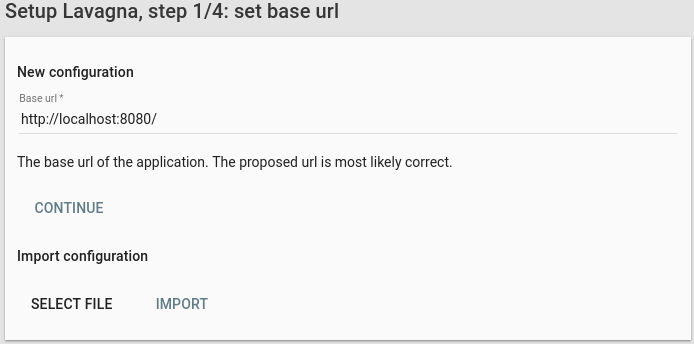
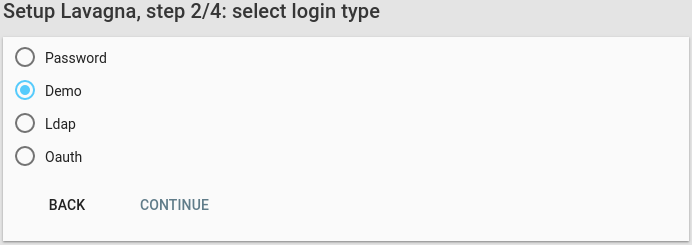
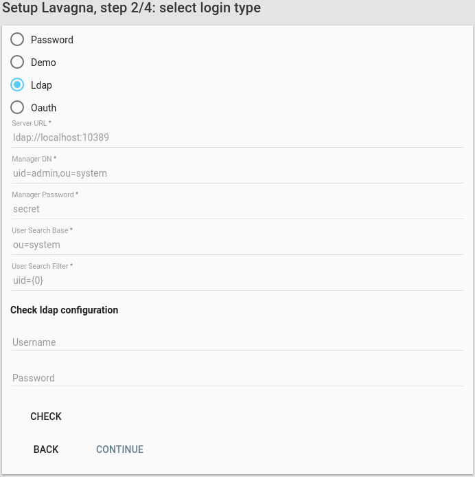
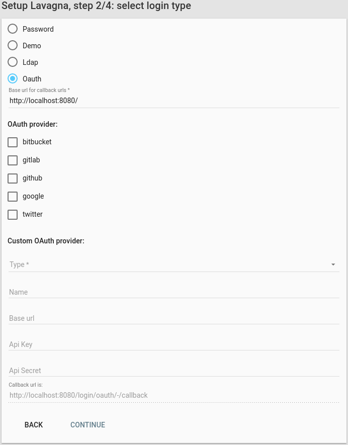
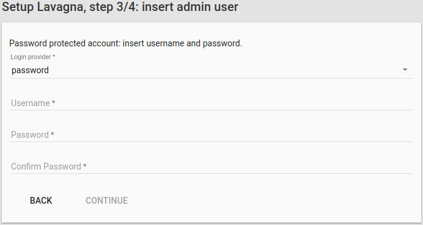
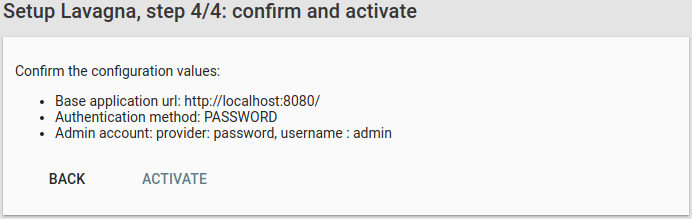

- 2.3Setup
- 2.3.1Step 1, Base url or import
- 2.3.2Step 2, Login provider configuration
- 2.3.2.1Password provider
- 2.3.2.2Demo provider
- 2.3.2.3Ldap provider
- 2.3.2.4Oauth provider
- 2.3.2.5Preconfigured oauth providers
- 2.3.2.6Custom oauth providers
- 2.3.3Step 3 Insert administator
- 2.3.4Step 4 Confirm
2.3Setup
2.3.1Step 1, Base url or import
After successfully launching the application, go to http://your-lavagna-install/setup .
The following page will be shown:

- If it’s a new install, confirm that the base url is correct and click Next
- If it’s an import, select the exported file and click Import. The import process can take a noticeable amount of time.
2.3.2Step 2, Login provider configuration
Lavagna does not store the user credentials by design: an external provider must be chosen. There are 3 possible choice:
- password
- demo (use for test purpose only)
- ldap
- oauth
2.3.2.1Password provider
If you want to manage your accounts inside lavagna.
2.3.2.2Demo provider
The demo provider must not be selected in production, as the password is the username. It can be useful for a small test round for evaluating the product.

2.3.2.3Ldap provider
If the users are stored in a ldap directory (Active Directory is supported too), the ldap provider must be configured.

It requires a user that can query the directory (the Manager DN and Manager Password).
The query is composed by a base (Search base) and the filter (User search filter), where {0} is the placeholder for the username.
The configuration can be tested in the “Check ldap configuration” form.
2.3.2.4Oauth provider
The application support the following external oauth providers:
- bitbucket
- gitlab.com
- github
Additionally, self-hosted/others external gitlab instances can be configured in the Custom Oauth provider section.

2.3.2.5Preconfigured oauth providers
Select the oauth provider of the first account and provide the api key and secret. The provided callback url should be the correct one that must be provided.
See the documentation for:
- bitbucket
- gitlab. Registration page is https://gitlab.com/profile/applications
- github. Registration page is https://github.com/settings/applications/new
- google: the “Google+ API” must be enabled
2.3.2.6Custom oauth providers
If you have a self-hosted (or others) gitlab instance, you can configure in the “Custom oauth providers” section.
Select the type, enter the name, the base url, api key and api secret.
Please note that if you are using self signed certificates you must include them in the default keystore of your java virtual machine. See the keytool documentation and this stackoverflow post. Lavagna will not provide a way to ignore untrusted certificates.
2.3.3Step 3 Insert administator
In the third step, the administrator must be defined. Enter the username and click Next.

2.3.4Step 4 Confirm
Check the validity of the configuration data. Click on Activate: the configuration will be saved and the browser will go to the root of the application. Enter the username (and password if required).
